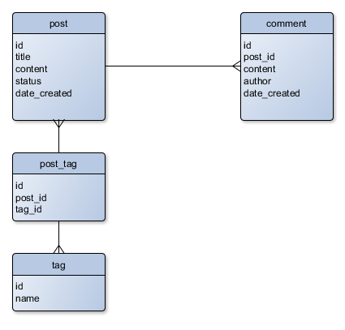

12.2. Создание простой базы данных MySQL
Для работы блога нам нужна база данных. В этой книге мы используем систему управления базами данных MySQL, которая очень проста в установке и администрировании.
За инструкциями по установке сервера и клиента MySQL для различных ОС обратитесь к Приложению А. Настройка среды веб-разработки.
После установки MySQL наберите следующую команду в командной оболочке для входа в консольный клиент MySQL.
mysql -u root -p
При запросе пароля, введите пароль пользователя root (вы указали его в процессе установки MySQL-сервера). При успешной авторизации вы увидите следующее сообщение:
Welcome to the MySQL monitor. Commands end with ; or \g.
Your MySQL connection id is 4
Server version: 5.7.13-0ubuntu0.16.04.2 (Ubuntu)
Copyright (c) 2000, 2016, Oracle and/or its affiliates. All rights reserved.
Oracle is a registered trademark of Oracle Corporation and/or its
affiliates. Other names may be trademarks of their respective
owners.
Type 'help;' or '\h' for help. Type '\c' to clear the current input statement.
mysql>
Теперь вы можете набирать команды клиента MySQL (show databases, show tables и др.) или
SQL-запросы (например, SELECT или INSERT) в командной строке и видеть их результат.
Для выхода из командной строки MySQL, наберите
quitи нажмите Enter.
12.2.1. Создание новой базы данных
Теперь двайте создадим базу данных и назовем ее blog. Для этого наберите следующий оператор SQL
и нажмите Enter:
CREATE DATABASE blog;
Ожидаемый результат этой команды такой:
Query OK, 1 row affected (0.01 sec)
Команды MySQL нечувствительны к регистру, так что с тем же результатом можно было набрать
create database blog;. Мы рекомендуем использовать верхний регистр для SQL-запросов, так как это является стандартом оформления.
Далее, создадим пользователя с именем blog и зададим ему все привилегии для доступа к базе данных
blog и внесения изменений в нее и все ее таблицы:
GRANT ALL PRIVILEGES ON blog.* TO blog@localhost IDENTIFIED BY '<passwd>';
В команде выше замените плейсхолдер паролем для пользователя blog. Этот пароль должен
отличаться от пароля для пользователя root.
Мы создаем нового пользователя
blog, так как для веб-приложения не рекомендуется входить в базу данных под пользователемroot. Пользователь root имеет неограниченные права, и было бы просто небезопасно предоставлять приложению возможность совершать любые действия. У пользователяblogбудут права только на изменение базы данныхblog, чего в нашем случае достаточно.
Созданную базу данных можно проверить, набрав следующую команду и нажав Enter:
show databases;
Вы должны будете увидеть такой результат (обратите внимание на строку blog в списке баз данных):
+--------------------+
| Database |
+--------------------+
| information_schema |
| blog |
| mysql |
| performance_schema |
+--------------------+
12.2.2. Создание таблиц
Далее, мы создадим три таблицы, типичные для любого простого блога: таблицу post, содержащую
посты, таблицу comment, содержащую комментарии к ним и таблицу tag, содержащую теги (тег является
своего рода ключом, описывающим пост блога).
Кроме этого, мы создадим вспомогательную четвертую таблицу post_tag, которая будет использоваться
для создания отношения «многие-ко-многим» между таблицами post и tag.
Сделаем базу данных blog текущей, набрав из командной строки MySQL следующее:
use blog;
Чтобы создать таблицу post, наберите следующий оператор SQL:
CREATE TABLE `post` (
`id` int(11) PRIMARY KEY AUTO_INCREMENT,
`title` text NOT NULL,
`content` text NOT NULL,
`status` int(11) NOT NULL,
`date_created` datetime NOT NULL
);
Клиент MySQL позволяет легко вводить многострочные команды. Для перевода каретки на новую строку просто нажмите Enter. Команда считается введенной при встрече с символом «точка с запятой» (;).
Ожидаемый результат этой команды:
Query OK, 0 rows affected (0.22 sec)
Теперь создадим таблицу comment следующим образом:
CREATE TABLE `comment` (
`id` int(11) PRIMARY KEY AUTO_INCREMENT,
`post_id` int(11) NOT NULL,
`content` text NOT NULL,
`author` varchar(128) NOT NULL,
`date_created` datetime NOT NULL
);
После этого создадим таблицу tag:
CREATE TABLE `tag` (
`id` int(11) PRIMARY KEY AUTO_INCREMENT,
`name` VARCHAR(128)
);
И наконец, создадим таблицу post_tag:
CREATE TABLE `post_tag` (
`id` int(11) PRIMARY KEY AUTO_INCREMENT,
`post_id` int(11) NOT NULL,
`tag_id` int(11) NOT NULL
);
Давайте заполним созданные нами таблицы примерами данных:
INSERT INTO tag(`name`) VALUES('ZF3');
INSERT INTO tag(`name`) VALUES('book');
INSERT INTO tag(`name`) VALUES('magento');
INSERT INTO tag(`name`) VALUES('bootstrap');
INSERT INTO post(`title`, `content`, `status`, `date_created`) VALUES(
'A Free Book about Zend Framework',
'I''m pleased to announce that now you can read my new book "Using Zend Framework 3" absolutely for free! Moreover, the book is an open-source project hosted on GitHub, so you are encouraged to contribute.',
2, '2016-08-09 18:49');
INSERT INTO post(`title`, `content`, `status`, `date_created`) VALUES(
'Getting Started with Magento Extension Development - Book Review',
'Recently, I needed some good resource to start learning Magento e-Commerce system for one of my current web projects. For this project, I was required to write an extension module that would implement a customer-specific payment method.',
2, '2016-08-10 18:51');
INSERT INTO post(`title`, `content`, `status`, `date_created`) VALUES(
'Twitter Bootstrap - Making a Professionaly Looking Site',
'Twitter Bootstrap (shortly, Bootstrap) is a popular CSS framework allowing to make your website professionally looking and visually appealing, even if you don''t have advanced designer skills.',
2, '2016-08-11 13:01');
INSERT INTO post_tag(`post_id`, `tag_id`) VALUES(1, 1);
INSERT INTO post_tag(`post_id`, `tag_id`) VALUES(1, 2);
INSERT INTO post_tag(`post_id`, `tag_id`) VALUES(2, 2);
INSERT INTO post_tag(`post_id`, `tag_id`) VALUES(2, 3);
INSERT INTO post_tag(`post_id`, `tag_id`) VALUES(3, 4);
INSERT INTO comment(`post_id`, `content`, `author`, `date_created`) VALUES(
1, 'Excellent post!', 'Oleg Krivtsov', '2016-08-09 19:20');
При необходимости базу данных вместе со всеми ее таблицами и данными легко можно удалить, набрав следующую команду из консоли MySQL:
DROP DATABASE blog;
Рисунок 12.3 графически иллюстрирует сущности нашей базы данных и отношения между ними.
 Рисунок 12.3. Графическое представление схемы базы данных
Как видите из рисунка, таблицы post и comment имеют связь один-ко-многим, так как у одного
поста может быть несколько комментариев. Это также называется отношением «один-ко-многим».
Таблицы post и tag имеют связь многие-ко-многим. У одного поста может быть много тегов,
а один тег, в свою очередь, может принадлежать нескольким постам. Отношение «многие-ко-многим»,
как правило, реализуется через вспомогательную таблицу (в нашем случае это таблица post_tag).
12.2.3. Импорт готовой схемы базы данных
В предыдущем разделе мы показали, как создать схему базы данных, которая используется в
приложении Blog. В реальной жизни вы, как правило, не будете набирать все эти операторы
SQL в командную строку MySQL. Вместо этого можно просто записать операторы CREATE TABLE
в файл и сохранить его на диск. Затем вы можете просто импортировать этот файл, и у вас
будет готовая схема.
Для вашего удобства, готовая схема для примера Blog находится в файле APP_DIR/data/schema.mysql.sql. Это обычный текстовый файл, содержащий операторы SQL. Для его импорта перейдите в каталог APP_DIR/data/ и наберите в командной оболочке следующую команду (не в командной строке MySQL):
mysql -u root -p blog < schema.mysql.sql
При запросе пароля, наберите пароль пользователя root и нажмите Enter.
После этого войдите в клиент MySQL и наберите следующие команды:
use blog;
show tables;
Вы должны будете увидеть список созданных таблиц, подобный этому:
+----------------+
| Tables_in_blog |
+----------------+
| comment |
| post |
| post_tag |
| tag |
+----------------+
4 rows in set (0.00 sec)
Кроме того, рассмотрите использование миграций базы данных для инициализации схемы базы данных. Обратитесь к главе Миграции баз данных за дополнительной информацией о миграциях.